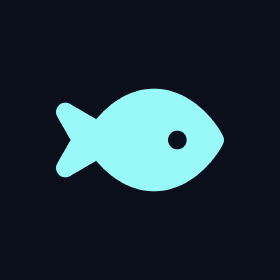

Apps
Two apps, both brought over from Iodine I.
iodineAi
rebuilt
Rebuilt for 2.2. The old one worked about half the time; this one answers. Ask it anything, or get help with homework.

NautilusOS
A whole "OS" in a web page, with a ton of proxies built in.